Baltimore Food Hub



We are open for business. The Baltimore Food Hub will be the first of its kind in the Region. As a food campus, every tenant will get the support and access they need to be focused on growing the food economy. Please get in touch if you are looking to rent space to build your food business.